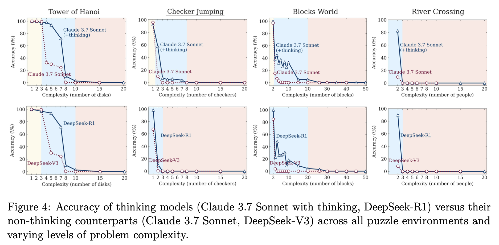
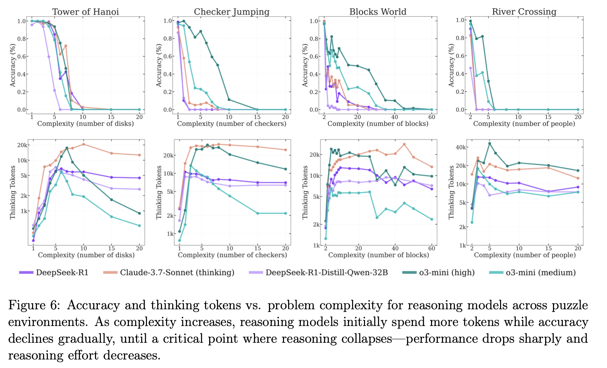
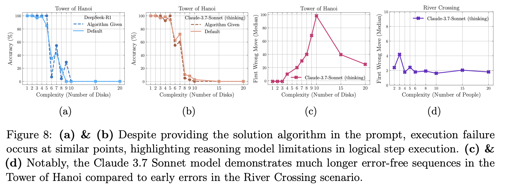

2025年に入り、OpenAIの「o1/o3」やAnthropicの「Claude 3.7 Sonnet Thinking」、そしてDeepSeek-R1といった、「思考するAI」とも呼べる大規模推論モデル（Large Reasoning Models, LRMs）が次々と登場して話題となっている。思考の過程を長々と書き出しながら最終的な答えを導き出すその姿は、AIが真の「推論能力」を獲得しつつあるという期待を抱かせるには十分だ。
しかし、その熱狂に冷や水を浴びせるような衝撃的な研究が、他ならぬAppleから発表された。Yoshua Bengioの弟であるSamy Bengioも名を連ねるこの論文「The Illusion of Thinking（思考という幻想）」は、最新のLRMが抱える根本的な脆さを、巧妙な実験設計によって白日の下に晒している。
本稿では、この論文の内容を深掘りし、現在の「思考するAI」がなぜ「幻想」に過ぎないのか、そしてその先にどのような課題が横たわっているのかを分析する。
なぜ「数学問題」での評価は不十分なのか？
これまで、LLMの推論能力は主に数学やコーディングのベンチマークで評価されてきた。しかし、論文の著者らはこの評価パラダイムそのものに疑問を呈す。その最大の理由は「データ汚染（Data Contamination）」だ。モデルが訓練データの中にあった同じ、あるいは類似した問題を「覚えて」しまい、それを解いているだけなのか、それとも未知の問題に対して真の推論を行っているのかを区別するのが極めて難しい。
そこで研究チームが用いたのが、「制御可能なパズル環境」というアプローチだ。具体的には、「ハノイの塔」や「川渡り問題」といった、ルールが明確で、かつ問題の複雑度（ディスクの枚数や登場人物の数など）を厳密にコントロールできるパズルを実験台とした。
このアプローチが巧妙なのは、以下の点にある。
- データ汚染の回避： ウェブ上には存在しないような複雑なパズルの設定も作れるため、「記憶」ではなく「推論」能力を試せる。
- 複雑度の厳密な制御： 問題の難易度を少しずつ上げていくことで、モデルの性能がどの時点で、どのように限界を迎えるかを正確に観測できる。
- 思考プロセスの検証： パズルは一手一手の正しさをシミュレーターで検証できるため、最終的な答えだけでなく、モデルが生成した「思考の過程」そのものの質を評価できる。
このエレガントな実験設計こそが、これまで見過ごされてきたLRMの限界を浮き彫りにしたのだ。
思考の「3つの領域」と「突然の崩壊」

実験結果は、我々が抱いていた「思考するAIは複雑な問題に強い」という単純なイメージを覆すものだった。モデルの振る舞いは、問題の複雑度によって明確に3つの領域に分かれたのである。[図4参照]
低複雑度領域（簡単な問題）： 驚くべきことに、この領域では「思考しない」通常のLLMの方が、LRMよりも高い正答率を叩き出した。LRMは正解を早々に見つけているにもかかわらず、無駄に思考を続け、かえって間違える「過剰思考（overthinking）」に陥っていた。短い思考で済むタスクに、わざわざ複雑な思考プロセスを導入することの非効率性が示されている。
中複雑度領域（中程度の問題）： この領域で、ようやくLRMはその真価を発揮する。長い思考プロセスを通じて、思考しないモデルでは解けない問題をクリアし、明確な優位性を見せつけた。現在のベンチマークでLRMが高い性能を示すのは、多くがこの領域の問題だからだろう。
高複雑度領域（難しい問題）： これが最も衝撃的な結果だ。ある一定の複雑度を超えると、LRMの正答率は文字通り「ゼロに崩壊（complete collapse）」した。思考プロセスは崩壊をわずかに遅らせるだけで、根本的な解決には至らない。思考するモデルも、しないモデルも、結局は同じ限界にぶつかってしまうのだ。
思考すればするほど「考えなくなる」という逆説
さらに不可解な現象が、思考の「量」に関する分析で明らかになった。常識的に考えれば、問題が難しくなるほど、モデルはより多くのトークン（思考の量）を費やして熟考するはずだ。
しかし、実験結果はその真逆を示した。[図6参照] LRMは、問題の複雑度が上がるにつれて思考量を増やしていくが、正答率がゼロに崩壊する「限界点」の直前で、なんと思考量を減らし始めるのだ。これは、モデルに割り当てられたトークン上限よりもはるかに少ない量であり、リソース不足が原因ではない。

まるで、難問を前にした学生が、解くのを諦めて答案を白紙で出すかのように、モデルは自ら「考えること」を放棄している。これは、現在のLRMの「思考」メカニズムが、問題の複雑さに対して根本的なスケーリングの限界を抱えていることを示唆している。
思考の中身を覗く：アルゴリズムを与えても解けないLLM
論文はさらに踏み込み、モデルの思考プロセス、その「中身」の分析から、さらに厄介な問題を暴き出す。
1. アルゴリズムを理解できない
「ハノイの塔」には、数学的に最適な解法（再帰アルゴリズム）が存在する。そこで研究チームは、この「完璧な解法のアルゴリズム」をプロンプトで与え、モデルにそれを実行させるという実験を行った。人間であれば、解き方を教えられればあとは作業するだけのはずだ。
しかし、結果は驚くべきものだった。アルゴリズムを与えても、モデルの性能は全く改善せず、与えなかった場合とほぼ同じ複雑度で崩壊したのだ。 [図8a, 8b参照] これは、LRMが単に問題解決の戦略を見つけるのが苦手なだけでなく、与えられた論理的なステップを一つ一つ忠実に実行するという、計算機が最も得意とするはずのタスクすら遂行できないことを意味する。彼らの「思考」は、記号を記号として厳密に操作する能力を欠いているのかもしれない。

2. 不可解な得意・不得意
さらに奇妙なのは、パズルの種類による性能の極端な差だ。例えば、Claude 3.7 Sonnetは、「ハノイの塔」では100手以上も正しい手順を生成できるケースがあった一方で、「川渡り問題」ではわずか4手で間違いを犯した。[図8c, 8d参照] 川渡り問題のほうが手順の総数は少ないにもかかわらず、だ。
これは、モデルが汎用的な推論能力を持つのではなく、訓練データで頻繁に目にしたパターンを記憶・再現しているに過ぎないことを強く示唆している。「ハノイの塔」はウェブ上に解法が無数に存在するが、複雑な「川渡り問題」の例は少ない。モデルは「推論」しているのではなく、見覚えのあるパターンの上をなぞっているだけなのだ。
LRMは裸の王様か
Appleが発表したこの論文は、「思考するAI」の時代の到来に沸く我々に対して、極めて重要な警鐘を鳴らしている。現在のLRMが見せる「思考」は、汎用的で堅牢な推論能力ではなく、特定のパターン認識と、ある程度の複雑さまでしか通用しない脆いメカニズムの上に成り立っている。
- 性能は、ある複雑度を超えると突然ゼロに崩壊する。
- 難問を前にすると、思考を増やすどころか諦めてしまう。
- 解き方を教えても、その通りに実行できない。
- 得意な問題と苦手な問題の差は、真の理解力ではなく「記憶」に依存している可能性が高い。
まるで「裸の王様」のように、我々が「思考」と呼んで感心していたものは、まだ精巧な幻想に過ぎないのかもしれない。この研究は、LLMの能力を過信することの危険性を示すと同時に、真の人工知能へと至る道が、単なるモデルの巨大化や思考プロセスの追加といった延長線上にはないことを教えてくれる。次なるブレークスルーは、この「幻想」の先にある、全く新しいアプローチから生まれるのだろう。